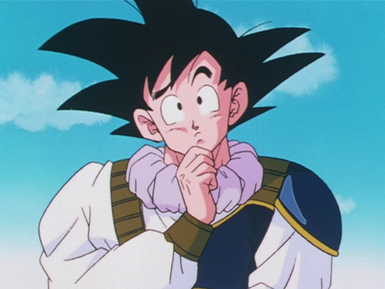
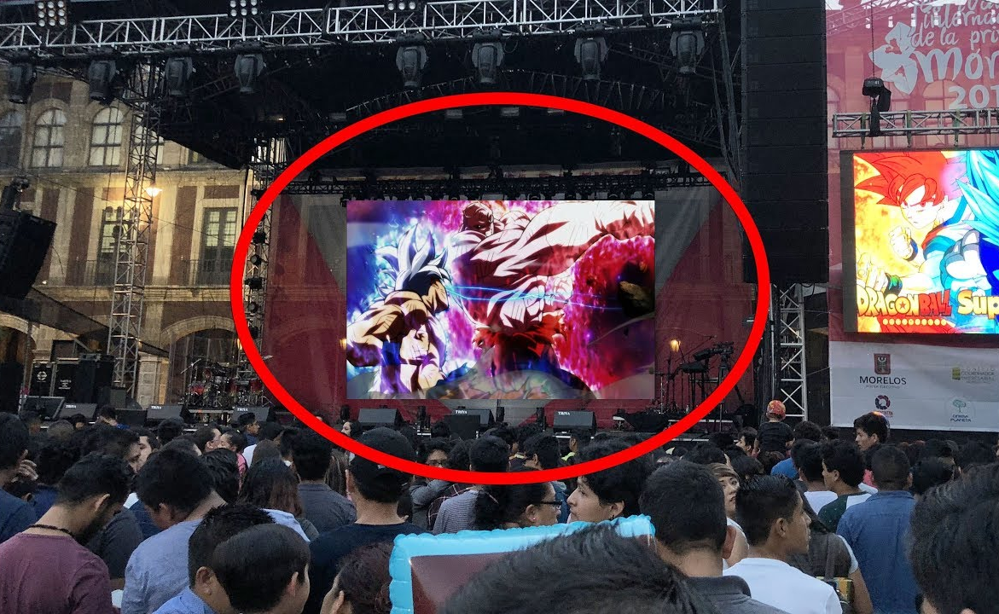
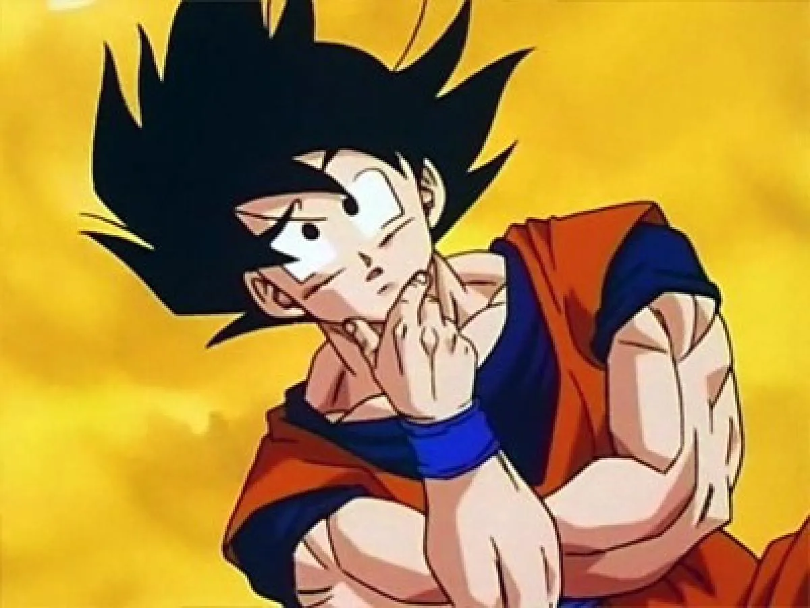

¿Que es Dragon Ball?
Es un manga escrito e ilustrado por Akira Toriyama. Fue publicado originalmente en la revista Shonen Jump, de la editorial japonesa Shueisha, entre 1984 y 1995. Su exito fue tan grande a que tuvo su adaptación animada, la cual recorrio el mundo entero y llevo su fama a lo mas alto.

Akira Toriyama
Es considerado como uno de los artistas que cambió la historia del manga, ya que sus obras son muy influyentes y populares, particularmente Dragon Ball y la saga Dragon Quest, que muchos artistas de manga citan como fuente de inspiración. El nacio en Abril de 1955 y actualmente es el supervisor del manga y anime Dragon Ball Super

Importancia a nivel mundial
El impacto que genero Dragon Ball no es algo que se ve todos los dias, ya que millones de niños al rededor del mundo de no solo esta, sino de las dos ultimas generaciones vivieron y siguen viviendo la historia de Goku y sus amigos. El impacto es tan grande que a dia de hoy hay eventos dedicado unica y exclusivamente a dragon ball como por ejemplo el tan famoso goku´s day el cual se celebra el 9 de mayo.

¿Como se mantuvo a lo largo del tiempo?
Dragon Ball causo un gran impacto a nivel mundial por alla en los 90 (decada en la cual tanto dragon ball como dragon ball z salio de Japon y fue a parar al resto del mundo) su boom fue tan grande que está presente en la infancia de mucho de los adultos que por esas fechas eran niño/adolcentes. Sin embargo luego de tal exito se realizo una remasterizacion de la serie llamada Dragon Ball Z Kai, La cual es una re-adaptacion de Dragon Ball Z corrigiendo errores y quitando escenas inecesarias que se encontraban en la primera adaptacion, está salio en 2009 haciendo que la gente que hoy por hoy recien está entrando en la etapa adulta de su vida tambien haya vivido la experiencia de conocer lo que es Dragon Ball en su niñes. Pero aquí no termina todo, ya que en 2015 fue lanzado el primer capitulo de Dragon Ball Super la cual seria la secuela de Dragon Ball Z y por consecuencia los niños de hoy en día siguen disfrutando de Dragon Ball, logrando que esta serie este presente no solo en una, ni dos, sino que en 3 diferentes generacion, perdurando de está manera a traves del tiempo.

Diferencias entre manga y anime
La historia original creada por Akira Toriyama es realmente la del manga. Gracias a su gran impacto tuvo su adaptacion animada a la pantalla pequeña. Sin embargo Toei Animation (la casa animadora de la serie) se tomo algunas libertadas a la hora de adaptar la historia de Toriyama. Por eso no es de extrañar que nos encontremos dialos y escenas que en la historia original no estan. Sin embargo con Dragon Ball Super la cosa cambia bastante. Ya que Akira Toriyama ya no es el dibujante del manga de Dragon Ball Super y su trabajo es unica yt exclusivamente crear el guion para la historua y este es enviado tanto a Toei Animation como a Toyotaro (actual dibujante del manga) y estos lo interpretan su manera, encontrando asi muchas mas diferencias entre el manga y el anime. Sin embargo cabe aclarar que Toriyama supervisa ambas historias pero enfatisa mas en la del manga.